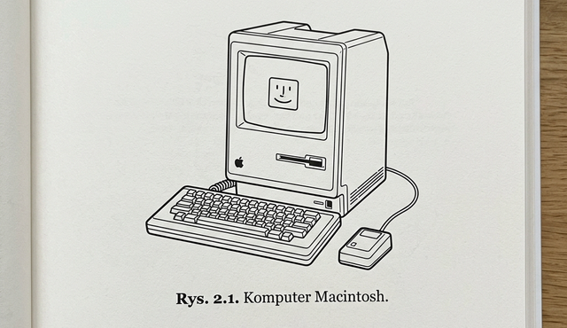
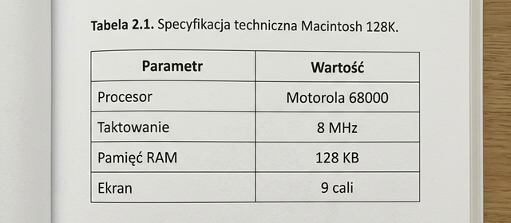

Temat: Zebrane informacje na temat wymogów edytorskich i formatowania tekstu w pracy dyplomowej.
Celem tych zaleceń jest dostarczenie dyplomantom kompleksowego standardu dotyczącego formatowania tekstu, tworzenia spisu treści, bibliografii, a także wstawiania rysunków, tabel i wzorów matematycznych. Przestrzeganie tych wskazówek gwarantuje, że Twoja praca będzie czytelna, profesjonalna i zgodna z wymogami uczelni.
Poniżej przedstawiono zasady formatowania tekstu, umieszczania wzorów, tabel i rysunków w pracy dyplomowej.
Cały tekst pracy należy pisać czcionką Times New Roman w rozmiarze 12. Odstępy pomiędzy wierszami – 1,5. W tabelach można stosować mniejszy rozmiar czcionki (jeśli np. ułatwi to zmieszczenie tabeli na stronie). Pomiędzy akapitami należy zostawiać 1 pusty wiersz. Tytuły rozdziałów i podrozdziałów pogrubione.
Przed i po wzorze należy zostawić jeden pusty wiersz. Sam wzór ma być wycentrowany. Jeżeli jest na niego powołanie w tekście, to musi on posiadać numer, zapisany w nawiasie okrągłym i dosunięty do prawego marginesu.
Format numeru według wytycznych zapisany w nawiasach okrągłych:
nr dużego rozdziału . nr wzoru w tym rozdziale )
Powołanie na wzór w tekście ma zawierać odniesienie do odpowiedniego numeru. Należy unikać zwrotów takich jak w poniższym wzorze..., ponieważ po dodaniu nowych tekstów układ strony może się przesunąć.
W tekście pracy jako rysunki należy traktować i tym samym stylem opisywać również:
Przed rysunkiem należy zostawić jeden pusty wiersz. Rysunek oraz jego podpis powinny być umieszczone symetrycznie na środku strony (wyśrodkowane).
Poprawna składnia formatu podpisu pod grafiką:
nr dużego rozdziału.nr rysunku w tym rozdziale. Tytuł rysunku.
Za podpisem rysunku należy również zostawić pusty wiersz. Podobnie jak przy wzorach, nie należy stosować zwrotów wskazujących położenie: np. na poniższym rysunku..., lecz powoływać się bezpośrednio na jego numer.

Przed podpisem tabeli zostawiamy jeden pusty wiersz. Podpis zawsze umieszczamy przed (nad) tabelą. Można go dosunąć do lewego marginesu - i opcjonalnie lekko podkreślić.
Poprawna składnia formatu podpisu tabeli to:
nr dużego rozdziału.nr tabeli w tym rozdziale. Tytuł tabeli.
Bezpośrednio po tabeli także zostawiamy jeden pusty wiersz. Jak w przypadku rysunków, unikaj zwrotów w stylu na poniższej tabeli. Odwołuj się do danych powołując się w tekście jednoznacznie na konkretny numer tabeli.

Strony należy numerować, sugerowane miejsce na numery: na dole na środku.
Mogą być zdefiniowane zgodnie z upodobaniami, ale jest to element opcjonalny, nie powinny one zaburzać czytelności strony.
Powinny umożliwiać oprawę lub zbindowanie pracy.
Stosowanie się do zaproponowanych reguł pozwoli Ci w łatwy i spójny sposób zaprojektować strukturę pracy dyplomowej. Przejrzyste formatowanie, dbałość o detale i zachowanie rzetelnej metodyki w procesie dokumentacji mają kolosalne znaczenie dla finalnej oceny Twojej pracy. Pamiętaj – to Ty jesteś odpowiedzialny za prezentację swoich wyników!
Wróć do struktury pracy dyplomowej Strona główna